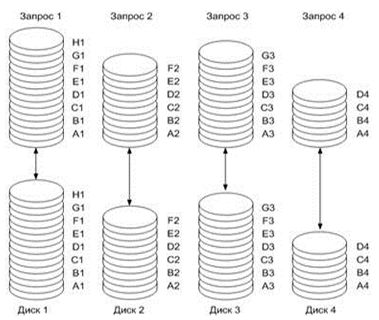
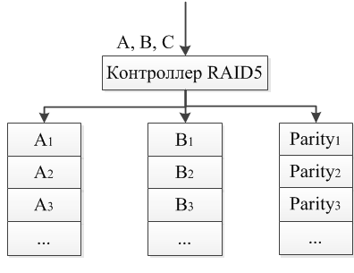

RAID — это избыточный массив независимых дисков (Redundant Arrays of Independent Discs), на который возлагается задача обеспечения отказоустойчивости и повышения производительности. Отказоустойчивость достигается за счет избыточности. То есть часть емкости дискового пространства отводится для служебных целей, становясь недоступной для пользователя.
Повышение производительности дисковой подсистемы обеспечивается одновременной работой нескольких дисков, и в этом смысле, чем больше дисков в массиве (до определенного предела), тем лучше.
Современную работу дисков в массиве можно организовать с использованием либо параллельного, либо независимого доступа.
При параллельном доступе дисковое пространство разбивается на блоки (полоски) для записи данных. Аналогично информация, подлежащая записи на диск, разбивается на такие же блоки. При записи отдельные блоки записываются на различные диски (рис. 1), причем запись нескольких блоков на различные диски происходит одновременно, что и приводит к увеличению производительности в операциях записи. Нужная информация также считывается отдельными блоками одновременно с нескольких дисков (рис. 2), что также способствует росту производительности пропорционально количеству дисков в массиве.
Следует отметить, что модель с параллельным доступом реализуется только при условии, что размер запроса на запись данных больше размера самого блока. В противном случае реализовать параллельную запись нескольких блоков просто невозможно. Представим ситуацию, когда размер отдельного блока составляет 8 Кбайт, а размер запроса на запись данных — 64 Кбайт. В этом случае исходная информация нарезается на восемь блоков по 8 Кбайт каждый. Если имеется массив из четырех дисков, то одновременно можно записать четыре блока, или 32 Кбайт, за один раз. Очевидно, что в рассмотренном примере скорость записи и скорость считывания окажется в четыре раза выше, чем при использовании одного диска. Однако такая ситуация является идеальной, поскольку далеко не всегда размер запроса кратен размеру блока и количеству дисков в массиве.
Если же размер записываемых данных меньше размера блока, то реализуется принципиально иная модель доступа — независимый доступ. Более того, эта модель может быть реализована и в том случае, когда размер записываемых данных больше размера одного блока.
При независимом доступе все данные отдельного запроса записываются на отдельный диск, то есть ситуация идентична работе с одним диском. Преимущество модели с независимым доступом в том, что при одновременном поступлении нескольких запросов на запись (чтение) все они будут выполняться независимо, на отдельных дисках. Подобная ситуация типична, например, в серверах.
В соответствии с различными типами доступа, архитектурой построения и распределения дисковой памяти существуют и различные типы RAID-массивов, которые принято характеризовать уровнями RAID.
В настоящее время существует несколько стандартизированных RAID-уровней, которые различаются по скорости, надежности и стоимости изготовления: от RAID 0 до RAID 5. К тому же используются комбинации этих уровней, а также фирменные уровни (например, RAID 6, RAID 7). Наиболее распространенными являются уровни 0,1,3 и 5.
В каждом из уровней RAID решается задача оптимизации какого-либо из параметров (или их сочетания):
Надежность всего массива уменьшается при увеличении количества дисков в массиве. При независимых отказах и экспоненциальном законе распределения наработки на отказ, MTTF всего массива (mean time to failure - среднее время безотказной работы) вычисляется по формуле:
MTTFarray = MMTFhdd/Nhdd
MMTFhdd - среднее время безотказной работы одного диска
Nhdd - количество дисков
Таким образом, возникает необходимость повышения отказоустойчивости дисковых массивов. Для повышения отказоустойчивости массивов используют избыточное кодирование. Существует два основных типа кодирования, которые применяются в избыточных дисковых массивах - это дублирование и четность. Для увеличения быстродействия применяется параллельная обработка.
Если расположить блок данных по N дискам некоторого массива и организовать это размещение так, чтобы существовала возможность одновременного считывания информации, то этот блок можно будет считать в N раз быстрее, (без учёта времени формирования блока). Поскольку все данные передаются параллельно, это архитектурное решение называется parallel-access array (массив с параллельным доступом).
Массивы с параллельным доступом обычно используются для приложений, требующих передачи данных большого размера.
Некоторые задачи, наоборот, характерны большим количеством малых запросов. К таким задачам относятся, например, задачи обработки баз данных. Располагая записи базы данных по дискам массива, можно распределить загрузку, независимо позиционируя диски. Такую архитектуру принято называть independent-access array (массив с независимым доступом).
Кроме типа доступа, уровни RAID различаются способом размещения и формирования избыточной информации. Избыточная информация может либо размещаться на специально выделенном диске, либо перемешиваться между всеми дисками. Способов формирования этой информации несколько больше.
| RAID | Минимум дисков | Потребность в дисках | Отказоустойчивость | Скорость передачи данных | Интенсивность обработки запросов | Практическое использование |
| 0 | 2 | N | < 1 диск | < RAID 3 | очень высокая до N х 1 диск | графика, видео |
| 1 | 2 | 2N* | < RAID 6 | R > 1 диск W = 1 диск | до 2 х 1 диск W = 1 диск | малые файл-серверы |
| 2 | 7 | N+1<X<2N | < RAID 1 | ~ RAID 3 | низкая | мейнфреймы |
| 3 | 3 | N+1 | < RAID 1 | < RAID 7 | низкая | графика, видео |
| 4 | 3 | N+1 | < RAID 1 | R < RAID 3 W < RAID 5 | R = RAID 0 W << 1 диск | файл-серверы |
| 5 | 3 | N+1 | < RAID 1 | R < RAID 4 W < RAID 3 | R = RAID 0 W < 1 диск | серверы баз данных |
| 6 | 4 | N+2 | самая высокая | низкая | R > 1 диск W < RAID 4 | используется крайне редко |
| 7 | 12 | N+1 | < RAID 1 | самая высокая | самая высокая | разные типы приложений |
Уточнения:
* - рассматривается обычно используемый вариант;
k – количество подсегментов;
R - чтение;
W - запись.
Для практической реализации RAID-массивов необходимы две составляющие: собственно массив жестких дисков и RAID-контроллер, который и определяет возможности по соединению жестких дисков в RAID-массив того или иного типа.
Контроллер выполняет функции связи с сервером (рабочей станцией), генерации избыточной информации при записи и проверки при чтении, распределения информации по дискам в соответствии с алгоритмом функционирования и другие.
Массивы RAID (в зависимости от способа реализации их контроллера) могут быть построены как программно, так и аппаратно. Примером программной реализации RAID может служить ОС Microsoft Windows NT 4.0 Server, в которой возможна программная реализация RAID-0, -1 и даже RAID-5 (Microsoft Windows NT 4.0 Workstation обеспечивает только RAID-0 и RAID-1).
Однако данное решение следует рассматривать, как крайне упрощенное, не позволяющее полностью реализовать возможности RAID-массива. Достаточно отметить, что при программной реализации RAID вся нагрузка по размещению информации на дисководах, вычислению контрольных кодов и т.д. ложится на центральный процессор, что естественно, не увеличивает производительности и надежности системы. По тем же причинам, здесь практически отсутствуют какие-либо сервисные функции и все операции по замене неисправного дисковода, добавления нового дисковода, изменения уровня RAID и т. п. производятся с полной потерей данных и при полном запрете выполнения каких-либо других операций. Единственное достоинство программной реализации RAID – минимальная стоимость.
Такое решение может считаться приемлемым только в случае значительного избытка вычислительной мощности и малой загрузки сервера.
Гораздо больше возможностей дает аппаратная реализация RAID при помощи специальных RAID-контроллеров:
Недостатком аппаратной реализации RAID является относительно высокая стоимость RAID-контроллеров. Однако, с одной стороны, за все (надежность, быстродействие, сервис) надо платить. С другой стороны, в последнее время, с развитием микропроцессорной техники, стоимость RAID-контроллеров (особенно младших моделей) стала резко падать и стала сравнимой со стоимостью обыкновенных дисковых контроллеров, что позволяет устанавливать RAID-системы не только в дорогие мэйнфреймы, но и в сервера начального уровня и даже в рабочие станции.
Конструктивно контроллеры бывают как внешние, так и внутренние. Имеются также интегрированные на материнской плате RAID-контроллеры. Кроме того, контроллеры различаются поддерживаемым интерфейсом дисков. Так, SCSI RAID-контроллеры предназначены для использования в серверах, а IDE RAID-контроллеры подходят как для серверов начального уровня, так и для рабочих станций.
Отличительной характеристикой RAID-контроллеров является количество поддерживаемых каналов для подключения жестких дисков. Несмотря на то, что к одному каналу контроллера можно подключить несколько SCSI-дисков, общая пропускная способность RAID-массива будет ограничена пропускной способностью одного канала, которая соответствует пропускной способности SCSI-интерфейса. Таким образом, использование нескольких каналов может существенно повысить производительность дисковой подсистемы.
При использовании IDE RAID-контроллеров проблема многоканальности встает еще острее, поскольку два жестких диска, подключенных к одному каналу (большее количество дисков не поддерживается самим интерфейсом), не могут обеспечить параллельную работу – IDE-интерфейс позволяет обращаться в определенный момент времени только к одному диску. Поэтому IDE RAID-контроллеры должны быть как минимум двухканальными. Бывают также четырех - и даже восьмиканальные контроллеры.
Другим различием между IDE RAID- и SCSI RAID-контроллерами является количество поддерживаемых ими уровней. SCSI RAID-контроллеры поддерживают все основные уровни и, как правило, еще несколько комбинированных и фирменных уровней. Набор уровней, поддерживаемых IDE RAID-контроллерами, значительно скромнее. Обычно это нулевой и первый уровни. Кроме того, встречаются контроллеры, поддерживающие пятый уровень и комбинацию первого и нулевого: 0+1.
Такой подход вполне закономерен, поскольку IDE RAID-контроллеры предназначены в первую очередь для рабочих станций, поэтому основной упор делается на повышение сохранности данных (уровень 1) или производительности при параллельном вводе-выводе (уровень 0). Схема независимых дисков в данном случае не нужна, так как в рабочих станциях поток запросов на запись/чтение значительно ниже, чем, скажем, в серверах. Основной функцией RAID-массива является не увеличение емкости дисковой подсистемы (как видно из его устройства, такую же емкость можно получить и за меньшие деньги), а обеспечение надежности сохранности данных и повышение производительности.
Для серверов, кроме того, выдвигается требование бесперебойности в работе, даже в случае отказа одного из накопителей. Бесперебойность в работе обеспечивается при помощи горячей замены, то есть извлечения неисправного SCSI-диска и установки нового без выключения питания. Поскольку при одном неисправном накопителе дисковая подсистема продолжает работать (кроме уровня 0), горячая замена обеспечивает восстановление, прозрачное для пользователей.
Однако скорость передачи и скорость доступа при одном неработающем диске заметно снижается из-за того, что контроллер должен восстанавливать данные из избыточной информации. Правда, из этого правила есть исключение — RAID-системы уровней 2, 3, 4 при выходе из строя накопителя с избыточной информацией начинают работать быстрее! Это закономерно, поскольку в таком случае уровень «на лету» меняется на нулевой, который обладает великолепными скоростными характеристиками.
Можно выделить несколько типов RAID-контроллеров в зависимости от их функциональных возможностей, конструктивного исполнения и стоимости.
По сути, это обыкновенный дисковый контроллер, который благодаря специальной прошивке BIOS позволяет объединять дисководы в RAID- массив, как правило, уровня 0, 1 или 0+1.
Контроллеры дисковода с функциями RAID вряд ли можно рекомендовать в качестве RAID- контроллера для сервера даже среднего уровня (отсутствует кэш, не поддерживается RAID-3 или -5). В то же время, это прекрасный выбор для серверов начального уровня, графических станций и систем нелинейного видео монтажа, для которых основным параметром является соотношение цена/производительность.
Данные RAID-контроллеры рассчитаны на работу с системными платами, на которых интегрирован дисковый контроллер. Таким образом, на плате контроллера находится только "логическая" часть RAID-контроллера, а функции обмена данными с дисководами возложена на дисковый контроллер, интегрированный на системной плате. Такие "усеченные" контроллеры, как правило, поддерживают многие функции полнофункциональных RAID-контроллеров, и, в тоже время, стоят намного дешевле. Однако данное решение не лишено недостатков. Главное из них - каждый "усеченный" контроллер жестко "привязан" к конкретному типу микросхем дискового контроллера и, следовательно, будет работать только на тех системных платах, на которых интегрирована такая микросхема.
Объединение RAID-контроллера с дисковым контроллером через шину PCI значительно нагружает последнюю, тормозя другие операции ввода-вывода. Для повышения общей производительности системы на некоторых системных платах введен дополнительный интерфейс, названный PCI-RAIDport и позволяющий RAID-контроллеру напрямую обмениваться данными с интегрированным на системной плате SCSI- контроллером.
RAID-контроллеры, работающие в паре с уже имеющимся дисковым контроллером, имеют стоимость не намного выше стоимости качественных Ultra2 SCSI дисковых контроллеров и, в тоже время, по характеристикам почти не уступают полнофункциональным RAID- контроллерам (отсутствует батарейный модуль для защиты кэша и не предусмотрена кластеризация RAID-контроллеров). Недостатком можно считать то, что эти контроллеры «заточены» для работы с определенными типами системных плат, что сужает область их применения.
Данные RAID-контроллеры содержат «на борту» все необходимое для работы с высокопроизводительными дисковыми системами:
Такие RAID-контроллеры выпускаются в виде платы для установки в PCI шину.
Выводы: полнофункциональные RAID-контроллеры отвечают самым высоким требованиям, как по производительности, так и по надежности и их можно рекомендовать для серверов среднего и верхнего уровней. Следует обратить внимание на повышенные требования к качеству модулей памяти, используемых для кэша.
Несмотря на прекрасные характеристики выше перечисленных RAID-контроллеров, все они имеют существенный недостаток, связанный с их конструкцией. Эти контроллеры являются "внутренними" в том смысле, что они управляются и получают напряжение питания через внутреннюю PCI шину системной платы. Очевидно, что сбои и отказы системной платы могут привести к искажениям или потере данных в RAID-массиве.
От этого недостатка свободны так называемые внешние RAID-контроллеры. Здесь термин "внешние" имеет двойное значение:
С точки зрения SCSI-контроллера внешний RAID-контроллер с дисковым массивом выглядит как один SCSI дисковод. Даже конструктивно внешний RAID-контроллер имеет габариты 3,5" или 5,25" дисковода. На лицевой панели внешнего RAID-контроллера может находиться ЖК-индикатор, отображающий состояние и параметры контроллера и клавиатура для управления и настройки.
Другой особенностью конструкции является модульность: внешний RAID-контроллер может состоять из основной “материнской” платы и “дочерних” плат, на которых располагаются дополнительные каналы. Разные модели “дочерних” плат могут содержать разные типы каналов – Ultra Wide SCSI, LVD SCSI или FC-AL, причем эти каналы могут быть двунаправленными, то есть работать как Host для подключенных к ним дисков, или как Drive при подключении к другому контроллеру.
Очевидно, что внешние RAID-контроллеры стоят значительно дороже, чем аналогичные внутренние модели, однако эта разница окупается за счет более широких возможностей внешнего RAID-контроллера.
Наличие двунаправленных каналов и внешнее исполнение позволяет создавать так называемые кластерные дисковые системы с недостижимой ранее надежностью. В таких системах несколько серверов соединены одновременно с несколькими RAID-контроллерами, которые, в свою очередь, управляют несколькими общими дисковыми массивами, причем отказ любого компонента такой системы (сервера, RAID-контроллера, диска, блока питания, кабеля и т.д.) не ведет к отказу всей системы, а только несколько снижает ее производительность.
Выводы: внешние RAID-контроллеры обеспечивают самый высокий уровень производительности и надежности из всех типов RAID- контроллеров. Их можно рекомендовать для серверов среднего и верхнего уровней.
Единственный недостаток – относительно высокая цена, однако, в ряде случаев, применение внешнего RAID- контроллера может дать экономию средств. Например, если в системе должны работать два сервера с RAID-массивами, то применение одного внешнего RAID-контроллера с общим дисковым массивом, подключенного к SCSI контроллерам каждого из серверов, позволит сэкономить стоимость внутреннего RAID-контроллера, рационально использовать дисковое пространство, упростить настройку и обслуживание.
Как уже отмечалось, основная задача RAID-контроллеров - обеспечение высокой надежности хранения и быстрого доступа к данным, хранящимся в дисковом массиве, а также высокого уровня сервиса при обслуживании дискового массива. Для оптимального функционирования RAID-контроллера и полного использования его возможностей необходимо при заказе RAID-массива (помимо самого контроллера и дисководов) обсудить ряд вопросов, которые в значительной степени повлияют на качество работы и стоимость будущего RAID-массива.
Само по себе применение RAID-контроллера не исключает вероятность выхода из строя любого из дисководов, входящих в RAID-массив. В этом случае, если используется RAID с избыточностью (т.е. любого уровня кроме RAID 0), система может продолжать работать (благодаря избыточности данных RAID-контроллер сможет восстановить информацию, хранившуюся на “потерянном” дисководе). Но такой режим работы уже не является защищенным (сбой или выход из строя любого дисковода приведет к полной потере всех данных) и пользователь вынужден остановить систему, чтобы извлечь неисправный дисковод и заменить его на новый. Если даже кратковременная остановка системы или вмешательство в нее не желательно, то необходимо применить технологию Hot Swap, которая позволяет менять дисководы (и не только их) не выключая системы. Для этого необходимо:
В качестве такого конструктива можно использовать:
Достоинства: удобный, защищающий дисковод корпус, безопасная (для работающей системы) процедура замены дисковода, наличие индикаторов и охлаждающих вентиляторов.
Недостатки: относительно высокая цена (от $10 до $150 на дисковод), дополнительные разъемы и схемы, которые могут стать источником отказов.
Достоинства: относительно невысокая цена (около $60 на дисковод), простая конструкция.
Недостатки: корпус дисковода не защищен от механических повреждений во время замены, процедура замены дисковода небезопасна для работающей системы, отсутствуют индикаторы SCSI ID-номера и индикаторы обращения к дисководу.
Технологию Hot Spare иногда рассматривают как альтернативу Hot Swap, хотя это не совсем верно. Для реализации Hot Spare необходимо:
Во время инициализации RAID-массива этот дополнительный дисковод включается в состав RAID, но не как активный, а как Hot Spare, т.е. находящийся в горячем резерве. В случае выхода из строя любого из дисководов, входящих в RAID-массив, RAID-контроллер автоматически отключает неисправный дисковод и активизирует резервный. Перенос (восстановление) информации также происходит в фоновом режиме без прерывания работы системы.
Достоинства: время, в течение которого RAID-массив находится в незащищенном режиме сведено к минимуму.
Недостатки: требуется дополнительный дисковод (который большую часть времени не участвует в работе системы, но потребляет энергию и выделяет тепло); после срабатывания Hot Spare в массиве больше не остается резервного дисковода и, чем раньше, тем лучше, потребуется остановить систему, что бы заменить неисправный дисковод. Выход очевиден: применять технологию Hot Spare вместе с Hot Swap.
RAID уровня 0, строго говоря, не является избыточным массивом и соответственно не обеспечивает надежности хранения данных. Тем не менее, данный уровень находит широкое применение в случаях, когда необходимо обеспечить высокую производительность дисковой подсистемы. Особенно популярен этот уровень в рабочих станциях.
При создании RAID-массива уровня 0 информация разбивается на блоки, которые записываются на отдельные диски, то есть создается система с параллельным доступом (если, конечно, размер блока это позволяет). Благодаря возможности одновременного ввода-вывода с нескольких дисков RAID 0 обеспечивает максимальную скорость передачи данных и максимальную эффективность использования дискового пространства, поскольку не требуется места для хранения контрольных сумм. Например, проведенные исследования показывают, что, по сравнению с одним дисководом, массив RAID-0 из двух дисководов дает прирост скорости записи/чтения на 96%, из трех дисководов на 143%.
Реализация этого уровня очень проста. В основном RAID 0 применяется в тех областях, где требуется быстрая передача большого объема данных.
Преимущества:
Недостатки:
RAID уровня 1 — это массив дисков со 100-процентной избыточностью. То есть данные при этом просто полностью дублируются (зеркалируются), за счет чего достигается очень высокий уровень надежности (как, впрочем, и стоимости).
Для реализации уровня 1 не требуется предварительно разбивать диски и данные на блоки. В простейшем случае два диска содержат одинаковую информацию и являются одним логическим диском (рис. 5). При выходе из строя одного диска его функции выполняет другой (что абсолютно прозрачно для пользователя). Кроме того, этот уровень удваивает скорость считывания информации, так как эта операция может выполняться одновременно с двух дисков. Такая схема хранения информации используется в основном в случаях, когда цена безопасности данных много выше стоимости реализации системы хранения.
Преимущества:
Недостатки:
Дисковые массивы нулевого и первого уровней целесообразно использовать в системах, обрабатывающих большие массивы данных и критичных к скорости чтения/записи.
RAID уровня 2 – это схема резервирования данных с использованием кода Хэмминга для коррекции ошибок. Записываемые данные формируются не на основе блочной структуры, как в RAID 0, а на основе слов, причем размер слова равен количеству дисков для записи данных в массиве. Каждый отдельный бит записывается на отдельный диск массива. Например, если массив имеет четыре диска записи данных, то последовательность четырех бит, то есть слово, запишется на каждом из дисков таким образом, что первый бит запишется на первом диске, второй бит – на втором и т.д.
Кроме того, для каждого слова вычисляется код коррекции ошибок (ЕСС), который записывается на выделенные диски для хранения контрольной информации. Количество бит в контрольном слове и соответственно необходимое количество дисков для хранения контрольной информации рассчитывается на основе следующей формулы: L = log2К
К – разрядность слова данных. Естественно, что при вычислении в данной формуле L округляется в большую сторону до ближайшего целого числа.
Чтобы не связываться с формулами, можно воспользоваться другим мнемоническим правилом: разрядность контрольного слова определяется количеством разрядов, необходимых для двоичного представления размера слова. Если, например, размер слова равен четырем (в двоичной записи 100), то, чтобы записать это число в двоичном виде, потребуется три разряда, значит, размер контрольного слова равен трем. Следовательно, если имеется четыре диска для хранения данных, то потребуется еще три диска для хранения контрольных данных. Аналогично при наличии семи дисков для данных (в двоичной записи 111) понадобится три диска для хранения контрольных слов. Если же под данные отводится восемь дисков (в двоичной записи 1000), то нужно уже четыре диска для контрольной информации.
Код Хэмминга, формирующий контрольное слово, основан на использовании поразрядной операции «исключающего ИЛИ» (XOR) (употребляется также название «неравнозначность») – логическая операция XOR дает единицу при несовпадении операндов (0 и 1) и нуль при их совпадении (0 и 0 или 1 и 1). Само контрольное слово, полученное по алгоритму Хэмминга, — это инверсия результата поразрядной операции исключающего ИЛИ номеров тех информационных разрядов слова, значения которых равны 1.
Для иллюстрации рассмотрим исходное слово 1101. В первом (001), третьем (011) и четвертом (100) разрядах этого слова стоит единица. Поэтому необходимо провести поразрядную операцию исключающего ИЛИ для этих номеров разрядов: 001(XOR)011(XOR)100 = 110.
Само же контрольное слово (код Хэмминга) получается при поразрядном инвертировании полученного результата, то есть равно 001.
При считывании данных вновь рассчитывается код Хэмминга и сравнивается с исходным кодом. Для сравнения двух кодов используется поразрядная операция «исключающего ИЛИ». Если результат сравнения во всех разрядах равен нулю, то считывание верное, в противном случае его значение есть номер ошибочно принятого разряда основного кода. Пусть, к примеру, исходное слово равно 1100000. Поскольку единицы стоят в шестой (110) и седьмой (111) позициях, контрольное слово равно 110.
Если при считывании зафиксировано слово 1100100, то контрольное слово для него равно 101. Сравнивая исходное контрольное слово с полученным (поразрядная операция исключающего ИЛИ), имеем: 110XOR101 = 011, то есть ошибка при считывании в третьей позиции. Соответственно, зная, какой именно бит является ошибочным, его легко исправить «налету».
Кроме того, код позволяет не только исправлять «налету» одиночные ошибки, но и обнаруживать двойные. При этом он является самым избыточным из всех уровней с кодами коррекции. Эта схема хранения данных применяется редко, поскольку плохо справляется с большим количеством запросов, сложна в организации и обладает незначительными преимуществами перед уровнем RAID 3.
Преимущества:
Недостатки:
RAID уровня 3 — это отказоустойчивый массив с параллельным вводом-выводом и одним дополнительным диском, на который записывается контрольная информация. При записи поток данных разбивается на блоки (страйпы) на уровне байт (хотя возможно и на уровне бит) и записывается одновременно на все диски массива, кроме выделенного для хранения контрольной информации. Для вычисления контрольной информации (называемой также контрольной суммой) используется операция «исключающего ИЛИ» (XOR), применяемая к записываемым блокам данных. При выходе из строя любого диска данные на нем можно восстановить по контрольным данным и данным, оставшимся на исправных дисках.
Рассмотрим в качестве иллюстрации блоки размером по четыре бита. Пусть имеются четыре диска для хранения данных и один диск для записи контрольных сумм. Если имеется последовательность бит 1101001111001011, разбитая на блоки по четыре бита, то для расчета контрольной суммы необходимо выполнить операцию: 1101(XOR)0011(XOR)1100(XOR)1011 = 1001. Таким образом, контрольная сумма, записываемая на пятый диск, равна 1001:
| Диск 1 | Диск 2 | Диск 3 | Диск 4 | Диск 5 |
| 1101 | 0011 | 1100 | 1011 | 1001 |
Если один из дисков, например, третий, вышел из строя, то блок 1100 окажется недоступным при считывании. Однако его значение легко восстановить по контрольной сумме и значениям остальных блоков, используя все ту же операцию «исключающего ИЛИ»: Блок 3=Блок 1(XOR)Блок 2(XOR)Блок 4(XOR)Контрольная сумма. В нашем примере получим: Блок 3 = 1101(XOR)0011(XOR)1011(XOR)1001 = 1100.
RAID уровня 3 имеет намного меньшую избыточность, чем RAID 2. Благодаря разбиению данных на блоки RAID 3 имеет высокую производительность. При считывании информации не производится обращение к диску с контрольными суммами (в случае отсутствия сбоя), что происходит всякий раз при операции записи. Поскольку при каждой операции ввода-вывода производится обращение практически ко всем дискам массива, одновременная обработка нескольких запросов невозможна. Данный уровень подходит для приложений с файлами большого объема и малой частотой обращений. Кроме того, к достоинствам RAID 3 относятся незначительное снижение производительности при сбое и быстрое восстановление информации.
Преимущества:
Недостатки:
Применяется редко, т.к. проигрывает RAID-5 по использованию дискового пространства. Реализация требует значительных затрат. Минимальное количество дисководов в массиве RAID-3 – 3шт.
RAID уровня 4 — это отказоустойчивый массив независимых дисков с одним диском для хранения контрольных сумм. RAID 4 во многом схож с RAID 3, но отличается от последнего, прежде всего, значительно большим размером блока записываемых данных (большим, чем размер записываемых данных). В этом и есть главное различие между RAID 3 и RAID 4.
После записи группы блоков вычисляется контрольная сумма (точно так же, как и в случае RAID 3), которая записывается на выделенный для этого диск.
Благодаря большему, чем у RAID 3, размеру блока возможно одновременное выполнение нескольких операций чтения (схема независимого доступа).
RAID 4 повышает производительность передачи файлов малого объема (за счет распараллеливания операции считывания). Но поскольку при записи должна вычисляться контрольная сумма на выделенном диске, одновременное выполнение операций здесь невозможно (налицо асимметричность операций ввода и вывода). Рассматриваемый уровень не обеспечивает преимущества в скорости при передаче данных большого объема. Эта схема хранения разрабатывалась для приложений, в которых данные изначально разбиты на небольшие блоки, поэтому нет необходимости дополнительно их разбивать. RAID 4 представляет собой неплохое решение для файл-серверов, информация с которых преимущественно считывается и редко записывается. Эта схема хранения данных имеет невысокую стоимость, но ее реализация достаточно сложна, как и восстановление данных при сбое.Преимущества:
Недостатки:
RAID уровня 5 – это отказоустойчивый массив дисков с распределенным хранением контрольных сумм. Блоки данных и контрольные суммы, которые рассчитываются точно так же, как и в RAID 3, циклически записываются на все диски массива, то есть отсутствует выделенный диск для хранения информации о контрольных суммах.
В случае RAID 5 все диски массива имеют одинаковый размер, однако, общая емкость дисковой подсистемы, доступной для записи, становится меньше ровно на один диск. Например, если пять дисков имеют размер 10 Гбайт, то фактический размер массива составляет 40 Гбайт, так как 10 Гбайт отводится на контрольную информацию.
RAID 5, так же как и RAID 4, имеет архитектуру независимого доступа, то есть в отличие от RAID 3 здесь предусмотрен большой размер логических блоков для хранения информации. Поэтому, как и в случае с RAID 4, основной выигрыш такой массив обеспечивает при одновременной обработке нескольких запросов. Главным же различием между RAID 5 и RAID 4 является способ размещения контрольных сумм.
Наличие отдельного (физического) диска, хранящего информацию о контрольных суммах, здесь, как и в трех предыдущих уровнях, приводит к тому, что операции считывания, не требующие обращения к этому диску, выполняются с большой скоростью. Однако при каждой операции записи меняется информация на контрольном диске, поэтому схемы RAID 2, RAID 3 и RAID 4 не позволяют проводить параллельные операции записи. RAID 5 лишен этого недостатка, поскольку контрольные суммы записываются на все диски массива, что обеспечивает возможность выполнения нескольких операций считывания или записи одновременно.
Преимущества:
Недостатки:
Область применения: надежные массивы большого объема. Реализация требует значительных затрат. Этот уровень находит наибольшее распространение в тех случаях, когда требуется достаточно высокая скорость передачи большого количества информационных файлов малого объема. Минимальное количество дисководов в массиве RAID 5 - 3шт.
Данные разбиваются на блочном уровне, аналогично RAID 5, но в дополнение к предыдущей архитектуре используется вторая схема для повышения отказоустойчивости. Эта архитектура является устойчивой к двойным отказам. Однако при выполнении логической записи реально происходит шесть обращений к диску, что сильно увеличивает время обработки одного запроса.
Более сложная схема, устойчивая даже к двойным отказам (но ценой низкой производительности).
Преимущества:
Недостатки:
Технологии RAID 3 , RAID 4 и RAID 6 представляют собой комбинации второго и пятого уровней, их отличительными особенностями являются процедуры вычисления контрольных сумм параллельно с передачей данных, а также наличие двух независимых алгоритмов вычисления контрольных сумм. Уровни 3; 4 и 6 обладают высокой скоростью считывания данных, но скорость записи относительно низкая, а конструкция системы сложная.
Эта архитектура являет собой массив типа RAID 0, сегментами которого являются массивы RAID 1. Он объединяет в себе высокую отказоустойчивость и производительность.
Преимущества:
Недостатки:
Представляет собой массив типа RAID 0, сегментами которого являются массивы RAID 3. Он объединяет в себе отказоустойчивость и высокую производительность. Обычно используется для приложений требующих последовательной передачи данных больших объемов.
Преимущества:
Недостатки:
Являет собой массив типа RAID 0, сегментами которого являются массивы RAID 5. Он объединяет в себе отказоустойчивость и высокую производительность для приложений с большой интенсивностью запросов и высокую скорость передачи данных.
Преимущества:
Недостатки:
{kind=link}
{kind=link}
{kind=link}
{kind=link}
{kind=link}
{kind=link}
{kind=link}
{kind=link}